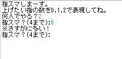

- TOP
- プロフィール
- 制作物

コード
コード(Java)[OS]
Windows 10
[開発ツール]
Eclipse 2019/Java version.11 (openJDK)
学習した内容を使って何か作りたかったパート2
普通の指スマ(いっせーので)のルールと同じ
「指スマ？」で口に出す数字を指定し、「上げる指」で自分があげる指の数を選ぶ。
コンピューターのターンでは上げる指のみ選ぶ。
[機能]
PL
ゲーム開始の全プレイヤーの合計指数より多く数字を指定したとき
(実際に人間がやるときの数字指定の間違いの可能性を加味して最大数の更新は行わない)
自分の持ち指以上の数を上げる指で選択したとき
→間違いを知らせて再入力を求める。
CP
現在のターンの全プレイヤーの最大数以上の数は指定しない。
「0」を指定するときに指を上げない。
自分の指を上げないと指定の数に到達しないときに指を上げる。

(you'v') : player
( 'v')<(@2)2(4!) : ( 'v')<(@自分の持ち指)上げた指(指定した数字！)
エラー(ゲーム開始の最大数以上指定)
エラー(自分の持ち指以上選択)